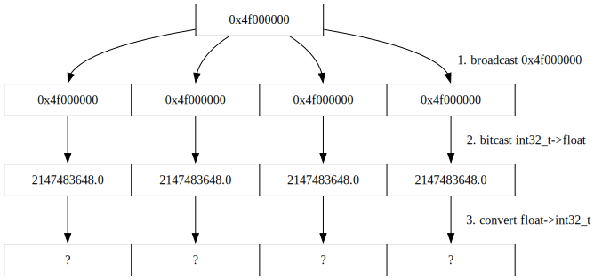

gcc simd intrinsics bug
highway keeps yielding very interesting gcc bugs. Some of them are
so obscure that I don’t even understand gcc developers’ comments on
where the bug lies: in highway or on gcc. In this post I’ll explore
PR115161 report here as an example of
how gcc handles simd intrinsics.
simplest xmm intrinsics example
Let’s start from an example based on another closely related bug:
#include <emmintrin.h>
#include <stdio.h>
#include <stdint.h>
#include <string.h>
int main(void) {
const __m128i iv = _mm_set1_epi32(0x4f000000); // 1
const __m128 fv = _mm_castsi128_ps(iv); // 2
const __m128i riv = _mm_cvttps_epi32(fv); // 3
uint32_t r[4];
memcpy(r, &riv, sizeof(r));
printf("%#08x %#08x %#08x %#08x\n", r[0], r[1], r[2], r[3]);
}The above example implements a vectored form of (int)2147483648.0
conversion using following steps:
- Place 4 identical 32-bit integer
0x4f000000values into 128-bitivvariable (likely anxmmregister). - Bit cast
4 x 0x4f00000into4 x 2147483648.0of 32-bitfloats. - Convert
4 x 2147483648.032-bitfloats into4 x int32_tby truncating the fractional part and leaving the integer one. - Print the conversion result in hexadecimal form.
Or the same in pictures:
Note: 2147483648.0 is exactly 231. Maximum int32_t can hold is
231-1, or 2147483647 (one less than our value at hand).
Quick quiz: What should this example return? Does it depend on the compiler options?
In theory those _mm*() compiler intrinsics are tiny wrappers over
corresponding x86_64 instructions.
Intel guide
says that _mm_cvttps_epi32() is a cvttps2dq instruction.
Running the example:
$ gcc -Wall a.c -o a0 -O0 && ./a0
0x80000000 0x80000000 0x80000000 0x80000000
$ gcc -Wall a.c -o a1 -O1 && ./a1
0x7fffffff 0x7fffffff 0x7fffffff 0x7fffffffOptimization levels do change the behaviour of the code when overflow happens: sometimes the result is 231 and sometimes it’s 231-1. Uh-oh. Let’s have a peek at the assembly of both cases.
-O0 case:
; $ rizin ./a0
; [0x00401050]> aaaa
; [0x00401050]> s main
; [0x00401136]> pdf
; DATA XREF from entry0 @ 0x401068
; int main(int argc, char **argv, char **envp);
; ...
movl $0x4f000000, var_8ch
movl var_8ch, %eax
; ...
movl %eax, var_80h
movd var_80h, %xmm1
punpckldq %xmm1, %xmm0
; ...
movaps %xmm0, var_48h
cvttps2dq var_48h, %xmm0
movaps %xmm0, var_78h
movq var_78h, %rax
movq var_70h, %rdx
movq %rax, var_28h
movq %rdx, var_20h
movl var_1ch, %esi
movl var_20h, %ecx
movl var_24h, %edx
movl var_28h, %eax
leaq str.08x___08x___08x___08x, %rdi ; 0x402004 ; "%#08x %#08x %#08x %#08x\n" ; const char *format
movl %esi, %r8d
movl %eax, %esi
movl $0, %eax
callq sym.imp.printf ; sym.imp.printf ; int printf(const char *format)
; ...While it’s a lot of superfluous code we do see there cvttps2dq
instruction and printf() call against it’s result.
-O1 case:
$ rizin ./a1
; [0x00401040]> aaaa
; [0x00401040]> s main
; [0x00401126]> pdf
; DATA XREF from entry0 @ 0x401058
; int main(int argc, char **argv, char **envp);
subq $8, %rsp
movl $0x7fffffff, %r9d
movl $0x7fffffff, %r8d
movl $0x7fffffff, %ecx
movl $0x7fffffff, %edx
leaq str.08x___08x___08x___08x, %rsi ; 0x402004 ; "%#08x %#08x %#08x %#08x\n"
movl $2, %edi
movl $0, %eax
callq sym.imp.__printf_chk ; sym.imp.__printf_chk
movl $0, %eax
addq $8, %rsp
retqHere we don’t see cvttps2dq at all! gcc just puts 0x7fffffff
constants into registers and calls printf() directly.
For completeness let’s try to find out the exact optimization pass that
performs this constant folding. Normally I would expect it to be a tree
optimization, and thus -fdump-tree-all would tell me where the magic
happens. Alas:
// $ gcc a.c -o a -O2 -fdump-tree-all && ./a
// $ cat a.c.265t.optimized
;; Function main (main, funcdef_no=574, decl_uid=6511, cgraph_uid=575, symbol_order=574) (executed once)
int main ()
{
unsigned int _2;
vector(4) int _3;
unsigned int _4;
unsigned int _5;
unsigned int _6;
<bb 2> [local count: 1073741824]:
_3 = __builtin_ia32_cvttps2dq ({ 2.147483648e+9, 2.147483648e+9, 2.147483648e+9, 2.147483648e+9 });
_2 = BIT_FIELD_REF <_3, 32, 96>;
_6 = BIT_FIELD_REF <_3, 32, 64>;
_4 = BIT_FIELD_REF <_3, 32, 32>;
_5 = BIT_FIELD_REF <_3, 32, 0>;
__printf_chk (2, "%#08x %#08x %#08x %#08x\n", _5, _4, _6, _2);
return 0;
}Here we see that _mm_set1_epi32() and _mm_castsi128_ps() were
“folded” into a 2.147483648e+9 successfully, but _mm_cvttps_epi32()
was not. And yet the final assembly does not contain the call. Let’s
have a loot at the RTL passes that usually follow tree ones as part
of the optimization:
$ gcc a.c -o a -O2 -fdump-rtl-all-slim && ./a
$ ls -1 *r.*
a.c.266r.expand
a.c.267r.vregs
a.c.268r.into_cfglayout
a.c.269r.jump
a.c.270r.subreg1
a.c.271r.dfinit
a.c.272r.cse1
a.c.273r.fwprop1
a.c.274r.cprop1
a.c.275r.pre
a.c.277r.cprop2
a.c.280r.ce1
a.c.281r.reginfo
a.c.282r.loop2
a.c.283r.loop2_init
a.c.284r.loop2_invariant
a.c.285r.loop2_unroll
a.c.287r.loop2_done
a.c.290r.cprop3
a.c.291r.stv1
a.c.292r.cse2
a.c.293r.dse1
a.c.294r.fwprop2
a.c.296r.init-regs
a.c.297r.ud_dce
a.c.298r.combine
a.c.300r.stv2
a.c.301r.ce2
a.c.302r.jump_after_combine
a.c.303r.bbpart
a.c.304r.outof_cfglayout
a.c.305r.split1
a.c.306r.subreg3
a.c.308r.mode_sw
a.c.309r.asmcons
a.c.314r.ira
a.c.315r.reload
a.c.316r.postreload
a.c.319r.split2
a.c.320r.ree
a.c.321r.cmpelim
a.c.322r.pro_and_epilogue
a.c.323r.dse2
a.c.324r.csa
a.c.325r.jump2
a.c.326r.compgotos
a.c.328r.peephole2
a.c.329r.ce3
a.c.331r.fold_mem_offsets
a.c.332r.cprop_hardreg
a.c.333r.rtl_dce
a.c.334r.bbro
a.c.335r.split3
a.c.336r.sched2
a.c.338r.stack
a.c.340r.zero_call_used_regs
a.c.341r.alignments
a.c.343r.mach
a.c.344r.barriers
a.c.349r.shorten
a.c.350r.nothrow
a.c.351r.dwarf2
a.c.352r.final
a.c.353r.dfinishIt’s a long list of passes! Let’s have a look at the first 266r.expand:
$ cat a.c.266r.expand
;;
;; Full RTL generated for this function:
;;
1: NOTE_INSN_DELETED
3: NOTE_INSN_BASIC_BLOCK 2
2: NOTE_INSN_FUNCTION_BEG
5: r106:V4SF=vec_duplicate([`*.LC1'])
6: r105:V4SF=r106:V4SF
REG_EQUAL const_vector
7: r104:V4SI=fix(r105:V4SF)
8: r99:V4SI=r104:V4SI
9: r108:V4SI=vec_select(r99:V4SI,parallel)
10: r107:SI=vec_select(r108:V4SI,parallel)
11: r110:V4SI=vec_select(vec_concat(r99:V4SI,r99:V4SI),parallel)
12: r109:SI=vec_select(r110:V4SI,parallel)
13: r112:V4SI=vec_select(r99:V4SI,parallel)
14: r111:SI=vec_select(r112:V4SI,parallel)
15: r113:SI=vec_select(r99:V4SI,parallel)
16: r114:DI=`*.LC2'
17: r9:SI=r107:SI
18: r8:SI=r109:SI
19: cx:SI=r111:SI
20: dx:SI=r113:SI
21: si:DI=r114:DI
22: di:SI=0x2
23: ax:QI=0
24: ax:SI=call [`__printf_chk'] argc:0
REG_CALL_DECL `__printf_chk'
25: r103:SI=0
29: ax:SI=r103:SI
30: use ax:SIHere V4SF means the vector type of 4 floats, V4SI is a vector type
of 4 ints, SI is an int type, DI is a long type. It looks like
our float->int32_t conversion happens in two early RTL instructions:
5: r106:V4SF=vec_duplicate([`*.LC1'])
6: r105:V4SF=r106:V4SF
REG_EQUAL const_vector
7: r104:V4SI=fix(r105:V4SF)The rest of RTL code is extraction of that result as printf()
arguments. It’s a lot of superfluous data moves. Later optimizations
should clean it up and assign “hardware” registers like r9 to virtual
registers like r108. For completeness final 353r.dfinish looks this
way:
$ cat a.c.353r.dfinish
;; Function main (main, funcdef_no=574, decl_uid=6511, cgraph_uid=575, symbol_order=574) (executed once)
1: NOTE_INSN_DELETED
3: NOTE_INSN_BASIC_BLOCK 2
2: NOTE_INSN_FUNCTION_BEG
34: {sp:DI=sp:DI-0x8;clobber flags:CC;clobber [scratch];}
REG_UNUSED flags:CC
REG_CFA_ADJUST_CFA sp:DI=sp:DI-0x8
35: NOTE_INSN_PROLOGUE_END
19: cx:SI=0x7fffffff
20: dx:SI=0x7fffffff
44: {ax:DI=0;clobber flags:CC;}
REG_UNUSED flags:CC
17: r9:SI=0x7fffffff
18: r8:SI=0x7fffffff
22: di:SI=0x2
32: si:DI=`*.LC2'
REG_EQUIV `*.LC2'
24: ax:SI=call [`__printf_chk'] argc:0
REG_DEAD r9:SI
REG_DEAD r8:SI
REG_DEAD di:SI
REG_DEAD si:DI
REG_DEAD cx:SI
REG_DEAD dx:SI
REG_UNUSED ax:SI
REG_CALL_DECL `__printf_chk'
45: {ax:DI=0;clobber flags:CC;}
REG_UNUSED flags:CC
46: NOTE_INSN_EPILOGUE_BEG
37: {sp:DI=sp:DI+0x8;clobber flags:CC;clobber [scratch];}
REG_UNUSED flags:CC
REG_CFA_ADJUST_CFA sp:DI=sp:DI+0x8
30: use ax:SI
38: simple_return
41: barrier
33: NOTE_INSN_DELETEDHere we don’t have fix() calls any more. printf() call already
contains immediate r8:SI=0x7fffffff constants. All registers are
resolved to real register names. Searching for fix() in all the pass
files I found that 272r.cse1 was the last pass that mentioned it.
a.c.273r.fwprop1 already has the constants inlined. Looking at
272r.cse1 in -fdump-rtl-all-all we can see that details are inferred
by cse1 about the fix() RTL instruction:
(insn 7 6 8 2 (set (reg:V4SI 104)
(fix:V4SI (reg:V4SF 106))) "...-gcc-15.0.0/lib/gcc/x86_64-unknown-linux-gnu/15.0.0/include/emmintrin.h":863:19 4254 {
fix_truncv4sfv4si2}
(expr_list:REG_EQUAL (const_vector:V4SI [
(const_int 2147483647 [0x7fffffff]) repeated x4
])
(expr_list:REG_DEAD (reg:V4SF 105)
(nil))))fix_truncv4sfv4si2() is the name of function that implements conversion
from fix() call down to the lower level instructions. And it looks
like fix() expansion also derived that the finals result is a constant:
(expr_list:REG_EQUAL (const_vector:V4SI [ (const_int 2147483647 [0x7fffffff]) repeated x4]).
Next fwprop1 pass will use that constant value everywhere where r104
is used.
gcc internals
documentation says that fix_trunc is a float-to-int conversion. Note
that this conversion does not look specific to our intrinsic. Any
code that casts floats would use the same helper. That explains why
_mm_cvttps_epi32() semantics around the overflow are not honoured and
generic floating conversion code it performed by gcc as if it was
written as (int)(2147483648.0f). Apparently both 0x7fffffff and
0x80000000 values are correct under that assumption.
The problem is that _mm_cvttps_epi32() is more specific than any valid
float->int conversion. intel manual specifically says that at
CVTTPS2DQ description
in “Intel® 64 and IA-32 Architectures Software Developer’s Manual Combined
Volumes: 1, 2A, 2B, 2C, 2D, 3A, 3B, 3C, 3D, and 4”:
Description
...
When a conversion is inexact, a truncated (round toward zero) value is
returned. If a converted result is larger than the maximum signed
doubleword integer, the floating-point invalid exception is raised, and
if this exception is masked, the indefinite integer value (80000000H) is
returned.Thus 0x80000000 would be a correct value here and not 0x7fffffff.
avoiding the _mm_cvttps_epi32() non-determinism
OK, gcc decided to treat it as problematic when handling overflow
condition. That should be easy to workaround by checking first if our
value is in range first, right? Say, something like the following
pseudocode:
float v = 2147483648.0f;
int32_t result;
if (v >= 2147483648.0f) {
result = 0x7fffffff;
} else {
result = fix(v);
}In a vectored code writing branching code is problematic, thus one needs
to be creative and use masking. That is what highway did in
avoid GCC "UB" in truncating cases
commit. It’s a lot of code, but it’s idea is to mask away values
calculated against overflows:
@@ -10884,7 +10869,11 @@ HWY_API VFromD<D> ConvertInRangeTo(D /*di*/, VFromD<RebindToFloat<D>> v) {
// F32 to I32 ConvertTo is generic for all vector lengths
template <class D, HWY_IF_I32_D(D)>
HWY_API VFromD<D> ConvertTo(D di, VFromD<RebindToFloat<D>> v) {
- return detail::FixConversionOverflow(di, v, ConvertInRangeTo(di, v));
+ const RebindToFloat<decltype(di)> df;
+ // See comment at the first occurrence of "IfThenElse(overflow,".
+ const MFromD<D> overflow = RebindMask(di, Ge(v, Set(df, 2147483648.0f)));
+ return IfThenElse(overflow, Set(di, LimitsMax<int32_t>()),
+ ConvertInRangeTo(di, v));
}If we amend our original example with this tweak we will get the following equivalent code:
// $ cat bug.cc
#include <stdint.h>
#include <string.h>
#include <emmintrin.h>
__attribute__((noipa))
static void assert_eq_p(void * l, void * r) {
char lb[16];
char rb[16];
__builtin_memcpy(lb, l, 16);
__builtin_memcpy(rb, r, 16);
if (__builtin_memcmp(lb, rb, 16) != 0) __builtin_trap();
}
#if 0
#include <stdio.h>
__attribute__((noipa))
static void d_i(const char * prefix, __m128i p) {
uint64_t v[2];
memcpy(v, &p, 16);
fprintf(stderr, "%10s(i): %#016lx %#016lx\n", prefix, v[0], v[1]);
}
#endif
__attribute__((noipa))
static void assert_eq(__m128i l, __m128i r) { assert_eq_p(&l, &r); }
int main() {
const __m128i su = _mm_set1_epi32(0x4f000000);
const __m128 sf = _mm_castsi128_ps(su);
const __m128 overflow_mask_f32 = _mm_cmpge_ps(sf, _mm_set1_ps(2147483648.0f));
const __m128i overflow_mask = _mm_castps_si128(overflow_mask_f32);
const __m128i conv = _mm_cvttps_epi32(sf);
const __m128i yes = _mm_set1_epi32(INT32_MAX);
const __m128i a = _mm_and_si128(overflow_mask, yes);
const __m128i na = _mm_andnot_si128(overflow_mask, conv);
const __m128i conv_masked = _mm_or_si128(a, na);
const __m128i actual = _mm_cmpeq_epi32(conv_masked, _mm_set1_epi32(INT32_MAX));
const __m128i expected = _mm_set1_epi32(-1);
assert_eq(expected, actual);
}Here _mm_and_si128() and _mm_andnot_si128() are used to mask away
converted values larger than 2147483648.0f.
If we look at the diagram it looks this way (I collapsed vector values
into ... x4 form as all of the values should be identical):
Here conv -> na green arrow shows where we throw away all the indefinite
values. They all get substituted for yes = 0x7FFFffff x4 value.
Thus the program should finally be deterministic, right? Let’s check:
$ gcc bug.cc -O0 -o a && ./a
$ gcc bug.cc -O2 -o a && ./a
Illegal instruction (core dumped)It does not. Only -O0 case works (just like before). Looking at the
assembly again, just -O2 this time:
; $ rizin ./a
; [0x004010a0]> aaaa
; [0x004010a0]> s main
; [0x00401040]> pdf
; DATA XREF from entry0 @ 0x4010a8
;-- section..text:
/ int main(int argc, char **argv, char **envp);
| ; arg uint64_t arg7 @ xmm0
| subq $8, %rsp ; [13] -r-x section size 483 named .text
| movss data.00402004, %xmm1 ; [0x402004:4]=0x4f000000
| movss data.00402008, %xmm3 ; [0x402008:4]=0x7fffffff
| shufps $0, %xmm1, %xmm1
| movaps %xmm1, %xmm2
| cvttps2dq %xmm1, %xmm0
| shufps $0, %xmm3, %xmm3
| cmpleps %xmm1, %xmm2
| movdqa %xmm2, %xmm1
| andps %xmm3, %xmm2
| pandn %xmm0, %xmm1
| por %xmm2, %xmm1
| pcmpeqd %xmm0, %xmm1 ; arg7
| pcmpeqd %xmm0, %xmm0 ; arg7
| callq sym.assert_eq_int64_t___vector_2___int64_t___vector_2 ; sym.assert_eq_int64_t___vector_2___int64_t___vector_2
| xorl %eax, %eax
| addq $8, %rsp
\ retqAt the first glance cvttps2dq instruction is present, thus gcc was
not able to completely constant fold it away. Thus it’s not immediately
obvious why it’s incorrect. Let’s have a look at the control flow
diagram reconstructed from the assembly:
In practice pcmpeqd %xmm0, %xmm1 instruction that was supposed to
implement _mm_cmpeq_epi32(conv_masked, _mm_set1_epi32(INT32_MAX)) gets
INT32_MAX not as a constant (say, from %xmm3), but as a %xmm0
register assuming it already has the expected value. Red line shows
where the assumption is introduced and brown dotted line shows what it
is removing.
The optimizer was not able to constant-fold all the arithmetic operations,
but it was able to fold just enough to introduce the discrepancy between
assumed and actual value of cvttps2dq.
To remove this overly specific assumption gcc-15 updated fix() code
not to assume a particular value on overflows using
this patch:
--- a/gcc/fold-const.cc
+++ b/gcc/fold-const.cc
@@ -2246,7 +2246,18 @@ fold_convert_const_int_from_real (enum tree_code code, tree type, const_tree arg
if (! overflow)
val = real_to_integer (&r, &overflow, TYPE_PRECISION (type));
- t = force_fit_type (type, val, -1, overflow | TREE_OVERFLOW (arg1));
+ /* According to IEEE standard, for conversions from floating point to
+ integer. When a NaN or infinite operand cannot be represented in the
+ destination format and this cannot otherwise be indicated, the invalid
+ operation exception shall be signaled. When a numeric operand would
+ convert to an integer outside the range of the destination format, the
+ invalid operation exception shall be signaled if this situation cannot
+ otherwise be indicated. */
+ if (!flag_trapping_math || !overflow)
+ t = force_fit_type (type, val, -1, overflow | TREE_OVERFLOW (arg1));
+ else
+ t = NULL_TREE;
+
return t;
}
diff --git a/gcc/simplify-rtx.cc b/gcc/simplify-rtx.cc
index 5caf1dfd957f..f6b4d73b593c 100644
--- a/gcc/simplify-rtx.cc
+++ b/gcc/simplify-rtx.cc
@@ -2256,14 +2256,25 @@ simplify_const_unary_operation (enum rtx_code code, machine_mode mode,
switch (code)
{
case FIX:
+ /* According to IEEE standard, for conversions from floating point to
+ integer. When a NaN or infinite operand cannot be represented in
+ the destination format and this cannot otherwise be indicated, the
+ invalid operation exception shall be signaled. When a numeric
+ operand would convert to an integer outside the range of the
+ destination format, the invalid operation exception shall be
+ signaled if this situation cannot otherwise be indicated. */
if (REAL_VALUE_ISNAN (*x))
- return const0_rtx;
+ return flag_trapping_math ? NULL_RTX : const0_rtx;
+
+ if (REAL_VALUE_ISINF (*x) && flag_trapping_math)
+ return NULL_RTX;
/* Test against the signed upper bound. */
wmax = wi::max_value (width, SIGNED);
real_from_integer (&t, VOIDmode, wmax, SIGNED);
if (real_less (&t, x))
- return immed_wide_int_const (wmax, mode);
+ return (flag_trapping_math
+ ? NULL_RTX : immed_wide_int_const (wmax, mode));
/* Test against the signed lower bound. */
wmin = wi::min_value (width, SIGNED);
@@ -2276,13 +2287,17 @@ simplify_const_unary_operation (enum rtx_code code, machine_mode mode,
case UNSIGNED_FIX:
if (REAL_VALUE_ISNAN (*x) || REAL_VALUE_NEGATIVE (*x))
- return const0_rtx;
+ return flag_trapping_math ? NULL_RTX : const0_rtx;
+
+ if (REAL_VALUE_ISINF (*x) && flag_trapping_math)
+ return NULL_RTX;
/* Test against the unsigned upper bound. */
wmax = wi::max_value (width, UNSIGNED);
real_from_integer (&t, VOIDmode, wmax, UNSIGNED);
if (real_less (&t, x))
- return immed_wide_int_const (wmax, mode);
+ return (flag_trapping_math
+ ? NULL_RTX : immed_wide_int_const (wmax, mode));
return immed_wide_int_const (real_to_integer (x, &fail, width),
mode);It fixes both tree optimizations if RTL optimizations not to assume a
specific value on known overflows.
After the fix gcc generates something that passes the test at hand:
$ g++ bug.cc -o bug -O2 && ./bugAnd the highway test suite.
For completeness the generated code now looks like this:
; $ rizin ./a
; [0x004010a0]> aaaa
; [0x004010a0]> s main
; [0x00401040]> pdf
; DATA XREF from entry0 @ 0x4010b8
;-- section..text:
/ int main(int argc, char **argv, char **envp);
| ; arg uint64_t arg8 @ xmm1
| subq $8, %rsp ; [13] -r-x section size 499 named .text
| movss data.00402004, %xmm0 ; [0x402004:4]=0x4f000000
| shufps $0, %xmm0, %xmm0
| movaps %xmm0, %xmm2
| cmpleps %xmm0, %xmm2
| cvttps2dq %xmm0, %xmm0
| movdqa %xmm2, %xmm1
| pandn %xmm0, %xmm1
| movss data.00402008, %xmm0 ; [0x402008:4]=0x7fffffff
| shufps $0, %xmm0, %xmm0
| andps %xmm0, %xmm2
| pcmpeqd %xmm0, %xmm0
| por %xmm1, %xmm2
| pcmpeqd %xmm1, %xmm1 ; arg8
| psrld $1, %xmm1
| pcmpeqd %xmm2, %xmm1 ; arg8
| callq sym.assert_eq_int64_t___vector_2___int64_t___vector_2 ; sym.assert_eq_int64_t___vector_2___int64_t___vector_2
| xorl %eax, %eax
| addq $8, %rsp
\ retqThis code looks slightly closed to originally written C code: %xmm2
collects masked result of cvttps2dq and %xmm1 contains 0x7FFFffff
value.
Parting words
While not as powerful as tree passes RTL passes are capable of folding
constants, propagating assumed values and removing dead code.
highway uncovered an old gcc bug in
a set of float->int conversion x86 intrinsics. This bug was not seen
as frequently until gcc implemented more constant folding cases for
intrinsics in this change.
gcc still has a few places where it could constant-fold a lot more:
- handle
_mm_cvttps_epi32(constant) - eliminate redundant
movaps %xmm0, %xmm2; cmpleps %xmm0, %xmm2and below
But gcc does not do it today.
If gcc thinks that some intrinsic returns a value that differs from
reality it’s very hard to reliably convince gcc to assume something
else. Sometimes it’s easier to use inline assembly to get the desired
result as a short term workaround.
Have fun!